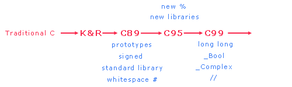

Module I - Design
Portability and Standards
Standard C89 |
Standard C99 |
Programming Style |
Exercises
We can compile and execute portable programs on different
hardware, operating systems or compilers either with no change
or with minor changes to the header file alone. For example,
we might change some #defines in the
header file to suit a new platform, but leave the source file intact.
To enable portability, compiler writers agree from time to time
to provide a common subset of language standards. If we
restrict our use of the language to the standard subset, we may
expect to be able to port our programs from one platform
to another without any modification whatsoever.
The first edition of "The C Programming Language"
by Kernighan and Ritchie published in 1978 provided
the original description of the C language. Since then,
the C language has undergone several 'standard' definitions:
C89, C95 and C99.

Standard C89
In 1982, the American National Standards Institute
formed a committee (X3J11) to propose a standard for
C. An international group converted this standard
with minor modifications into the ISO/IEC 9899:1990
standard, which ANSI then adopted. This is
called Standard C.
Standard C introduced:
- function prototypes
- new keywords, including signed
- a standard library
- whitespace before #
In 1995, ANSI introduced some amendments to Standard C,
called C95, which included new conversion specifiers for
printf and scanf
and numerous new library functions.
Standard C99
ISO/IEC approved a new international standard in 1999: ISO/IEC 9899:1999 (C99).
Compiler vendors are gradually updating their compilers and libraries
to conform to this new standard.
C99 introduced the following features:
- long long data type
- _Bool data type
- _Complex data type
- complex arithmetic
- variable-length arrays
- // C++ style comments
- better support for floating-point types, including
math functions for all types
Microsoft included the long long features in its .net 2003 compiler (version 7.1).
long long is available with the cc compiler.
To include //, we add the -qcpluscmt option
Portability Checks
Programming Styles
Adopting a popular standard may enable you to make
use of checking tools that support the standard.
Two frequently used programming standards:
Some common standards include:
- #includes should follow the header
comments. #defines should follow
the #includes.
- constants should be of the same data type as the variables
that the constants initialize,
- avoid declarations that shadow declarations at a higher level,
- split compound conditions into one simple condition per line,
- avoid defaulting a test condition to non-zero,
- compare ot FALSE rather than TRUE,
- comment each fall through in a switch,
- attach unary operators to their operand without spaces,
- #define constants in all CAPS,
- avoid names that differ in case only,
- avoid names that look like each other,
- compare a ointer to NULL instead of 0,
- avoid assuming ASCII,
- avoid assumptions about parameter passing and order of evaluation,
- avoid possible side effects such as a[i] = b[i++];,
- use explicit casts when mixing signed and unsigned.
Lint Code Checkers
lint is a populer code checker that we
can use to identify portability problems (or semantic bugs).
Consider the followng program
/* Use lint for portability
* lint.c
* BTP100
* Nov 30 2004
*/
#include <stdio.h>
int main(void) {
char c;
c = getchar();
if (c == EOF)
printf("End of data\n");
else
printf("You entered %c\n", c);
return 0;
}
|
Under normal settings, the cc and
cl .net compilers compile this
source code without any warning or error messages.
If the user compiles and executes this program on
phobos and enters "end
of data" (Ctrl-D), this program prints
If the user compiles and executes this program on
cl and enters "end of
data" (Ctrl-Z), this program prints
The discrepancy arises because cc on
phobos stores char
as unsigned char, while
cl stores char
as signed char.
To resolve the discrepancy, we declare the character
c as signed char.
/* Use lint for portability
* lint.c
* BTP100
* Nov 30 2004
*/
#include <stdio.h>
int main(void) {
signed char c;
c = (signed char) getchar();
if (c == EOF)
printf("End of data\n");
else
printf("You entered %c\n", c);
return 0;
}
|
To identify the portability problem on phobos,
we can pass the source code through the lint
code checker:
lint lint.c
|
"lint.c", line 13: warning: comparison of
unsigned with negative constant
|
To identify the portability problem on cl .net,
we change the compiler warning level options to /W4
(warning level 4) and /WX (treat all warnings as errors).
cl lint.c /W4 /WX
|
lint.c(11) : error C2220: warning treated as error
- no object file generated
lint.c(11) : warning C4244: '=' : conversion from
'int' to 'char', possible loss
of data
|
You can find documentation on lint code checkers
in the AIX man pages
and here
Exercises
- Check your solution to assignment 4 for portability using a lint code checker.
|